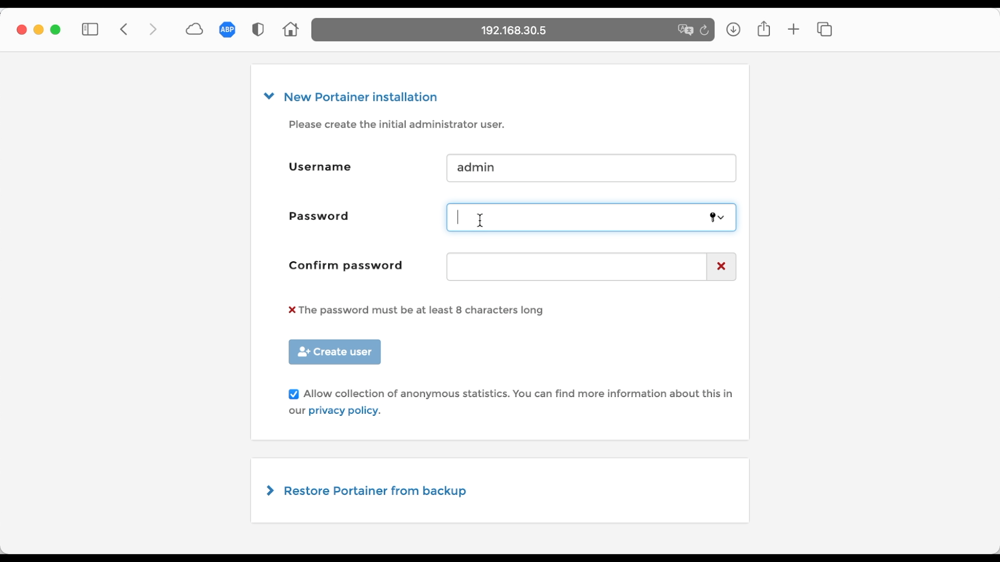
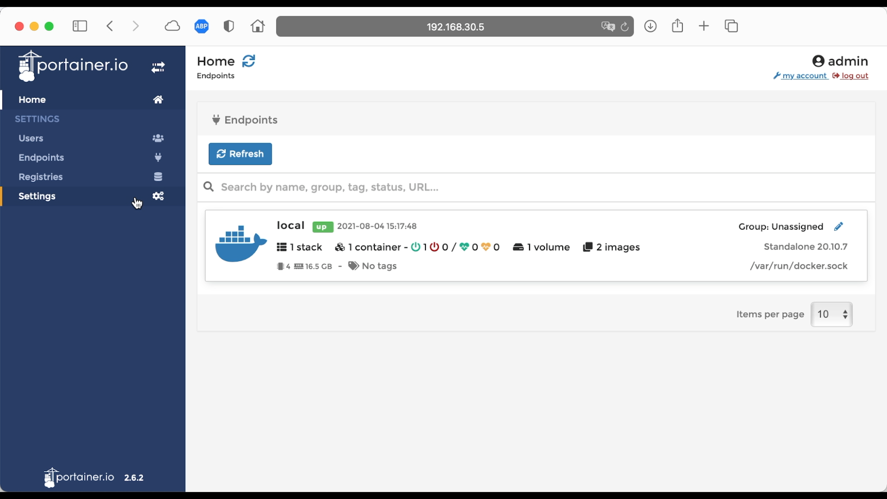
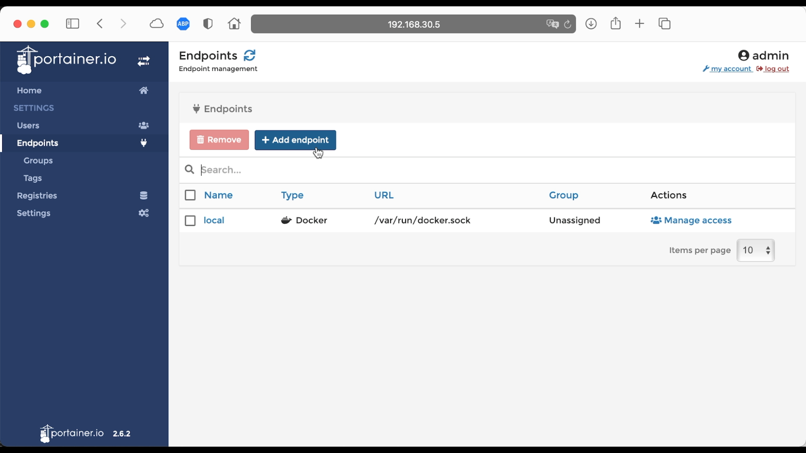
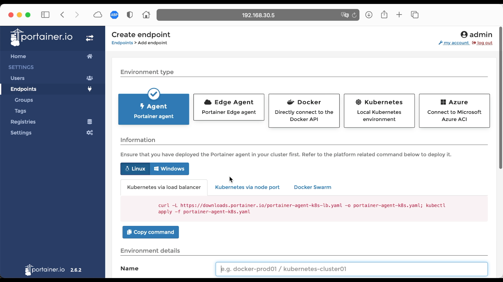
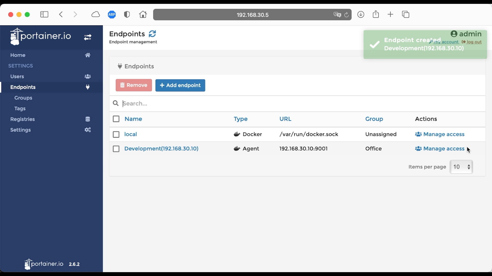
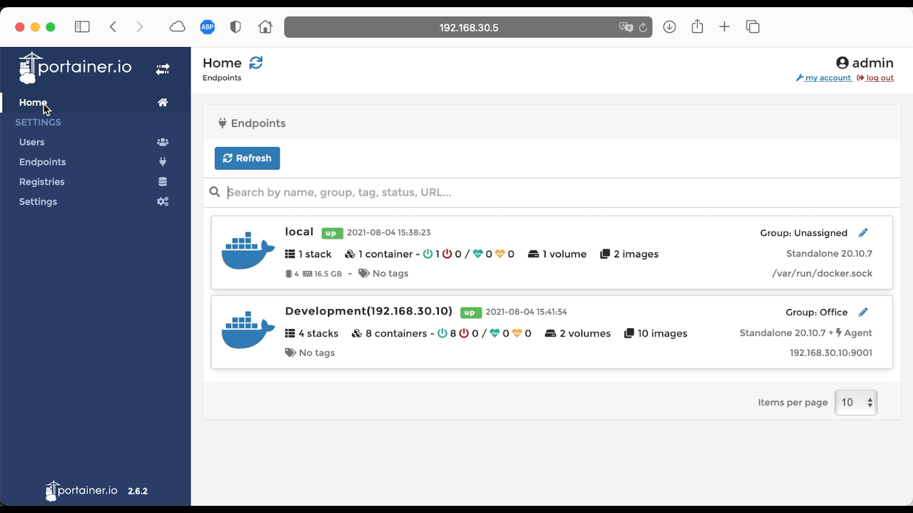

| 知乎专栏 ｜ 多维度架构 |
目录
Portainer 是一个轻量级的 Docker 管理界面，官方提供了 Demo 演示地址
Server 服务器安装
docker volume create portainer_data docker run -d -p 8000:8000 -p 9000:9000 --name=portainer --restart=always -v /var/run/docker.sock:/var/run/docker.sock -v portainer_data:/data portainer/portainer-ce
Agent 代理安装
docker run -d -p 9001:9001 --name portainer_agent --restart=always -v /var/run/docker.sock:/var/run/docker.sock -v /var/lib/docker/volumes:/var/lib/docker/volumes portainer/agent
使用 docker-compose 安装
version: '3.9'
services:
portainer:
image: portainer/portainer-ce
container_name: prtainer
restart: always
volumes:
- /var/run/docker.sock:/var/run/docker.sock
- portainter:/data
ports:
- 8000:8000
- 9000:9000
portainer-agent:
image: portainer/agent
container_name: portainer-agent
restart: always
volumes:
- /var/run/docker.sock:/var/run/docker.sock
- /var/lib/docker/volumes:/var/lib/docker/volumes
ports:
- 9001:9001
volumes:
portainter:
第一台管理服务器，启动管理界面： [root@netkiller portainer]# docker-compose up -d portainer 第二台开发环境服务器，启动代理： [root@development portainer]# docker-compose up -d portainer-agent 第三台测试环境服务器，启动代理 [root@testing portainer]# docker-compose up -d portainer-agent
设置管理员密码，创建用户
|  |
当前界面中有三个选项，分别是 Docker（本地 Docker），Kubernetes, Agent(代理)
 |
添加本地 Docker，通过 UNIX SOCK 链接，通常是 /var/run/docker.sock
 |
点击 Connect 按钮就可以建立链接
|  |
添加代理 Docker，左边菜单点击 Endpoints，然后点击 Add endpoint
|  |
选择 Agent
|  |
Name 给代理起个名气，Endpoint URL 输入代理的IP地址和端口号，Group 是分组（可不选），最后点击 Add endpoint 按钮。
 |
完成代理的添加
|  |
回到 Home
|  |
portainer 错误日志
portainer | 2021/08/04 07:24:14 http error: Unable to initiate communications with endpoint (err=agent already paired with another Portainer instance) (code=500) portainer | 2021/08/04 07:25:49 http error: Unable to initiate communications with endpoint (err=agent already paired with another Portainer instance) (code=500)
agent 日志
portainer-agent | 2021/08/04 07:25:49 http error: Invalid request signature (err=Unauthorized) (code=403) portainer-agent | 2021/08/04 07:25:49 http error: Invalid request signature (err=Unauthorized) (code=403)
问题出在，重装了 portainer 先前的 agent 已经与之前的 portainer 建立链接。
解决方法，重装 agent 记得要删除卷。
[root@testing portainer]# docker-compose stop portainer-agent
Stopping portainer-agent ... done
[root@testing portainer]# docker-compose rm -a portainer-agent
WARNING: --all flag is obsolete. This is now the default behavior of `docker-compose rm`
Going to remove portainer-agent
Are you sure? [yN] y
Removing portainer-agent ... done
[root@testing portainer]# docker volume ls
DRIVER VOLUME NAME
local portainer_portainter
[root@testing portainer]# docker volume rm portainer_portainter
portainer_portainter
[root@testing portainer]# docker-compose up -d portainer-agent
Creating volume "portainer_portainter" with default driver
Creating portainer-agent ... done
[root@testing portainer]# docker-compose ps
Name Command State Ports
----------------------------------------------------------------------------
portainer-agent ./agent Up 0.0.0.0:9001->9001/tcp,:::9001->9001/tcp